Dalma Compute Node release checklist¶
This document describes the configuration has to be taken place on any new compute node before going to production
Configure the iLO IP and BIOS settings as per below settings
Press F9 while system is booting
Go to System Configuration
iLO 4 configuration Utility
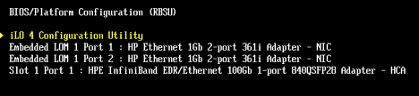Change the IP address and other details like below
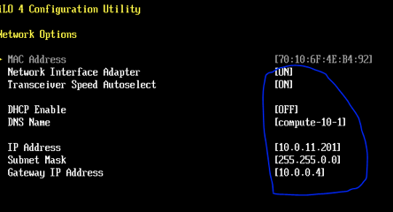Advanced Network Options everything should be disabled
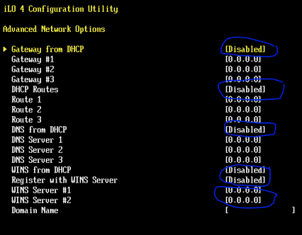Add standard user admin and password
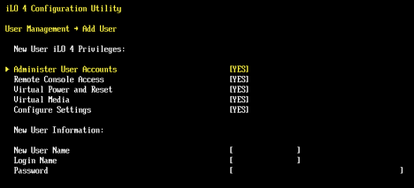Go Back to BIOS/Platform Configuration àSystem Options à Processor Options disable hyperhreading
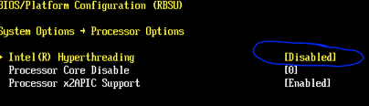Power Management change the setting like below
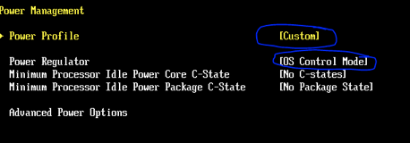Performance Options disable Turbo boosting
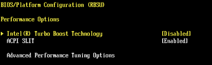Server Availability make the changes like below

Advanced Options –> Advanced System Options update serial number of old server
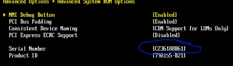Finally go to Boot Options change the boot order policy first then change Boot mode
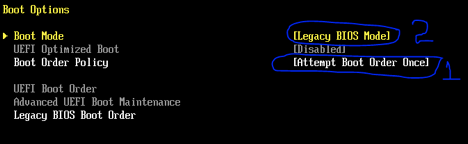Save all setting and system will be rebooted
Allow system to be booted and let scan all the new hardware (Don’t press F9 during POST)
Again reboot the system and go to BIOS and change the Legacy BIOS Boot Order to
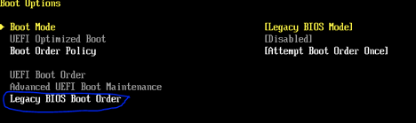Reboot the server and go to warewulf server to update the new mac address
[root@warewulf] # wwnodescan –replace –netdev=eth0 compute-x-y
Execute the command above when the server is trying to acquire an IP address via DHCP during boot
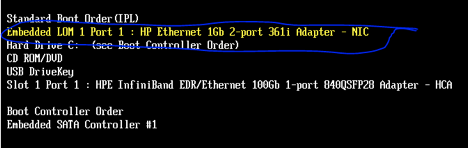Note: Make sure while issuing the wwsh command in warewulf server no other nodes to be rebooted or booted without our knowledge otherwise it will update the MAC address wrongly and node will not boot.
Login to the iLO using web browser and downgrade the BIOS if it is not same as below
For updating BIOS go to AdministrationàFirmware and Browse for the firmware à Upload
Upgrade will 3-4 minutes and once it done reset the server and check the new version
Firmware location /home/admins/Computenode-Xl170r/BIOS/U14_1227.15
Go to Administration à Management à update the SNMP settings .. image:: img/boot15.png
Go to Network àiLO dedicated Network port à SNTP
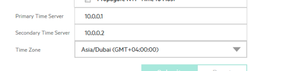Update the Mellanox IB fw
Check all Firmware levels including IB EDR card
EDR HCA Firmware version should be: 12.14.2036
The firmware is located at /home/admins/EDR_FW
Copy the firmware to the node
# tar xvzf fw-ConnectX4-rel-12_14_2036-825110-B21_Ax_Bx-UEFI-14.9.48-FlexBoot-3.4.722.tgz # lspci | grep -i mellanox 88:00.0 Infiniband controller: Mellanox Technologies MT27700 Family [ConnectX-4] # mstflint –d 88:00.0 –i /tmp/fw-ConnectX4-rel-12_14_2036-825110-B21_Ax_Bx-UEFI-14.9.48-FlexBoot-3.4.722.bi burn